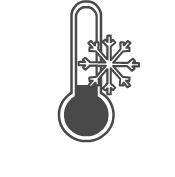

Критические значения параметров метеорологических явлений
Сами по себе атмосферные осадки и изменения температур не несут опасности, значение имеет то, насколько они могут усилиться. Когда мелкий дождь становится затяжным или превращается в сильный дождь (ливень), возникает опасность подтопления. Усиление, поначалу легкого ветерка до шквалистого ветра повышает вероятность обрыва проводов. То же относится и к другим метеорологическим явлениям. С помощью переключателя «усильте» то или иное явление природы и посмотрите, при каких критических параметрах оно становятся опасным.
*Сдвиньте переключатель под иконкой, чтобы увидеть критические параметры.Ветер

Скорость порывов от 25м/c и более.
Дождь

Кол-во осадков 100 мм и более, в период менее чем за 12 часов.
Снег

Кол-во осадков 20 мм и более, в период менее чем за 12 часов.
Метель

При ветре 20 м/c в течение суток с выпадением снега.
Град

Диаметр градин 20 мм и более.
Гололед

Диаметр отложений на проводах 20 мм и более.
Мороз
Температура воздуха у поверхности земли - 30°C и ниже для Европейской части РФ.